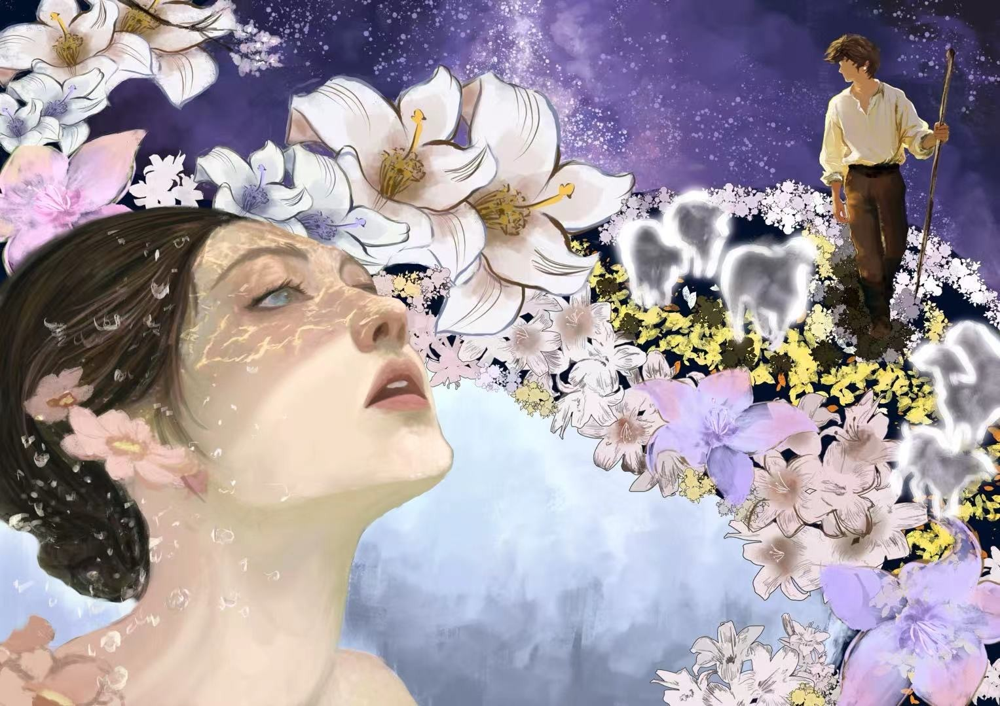
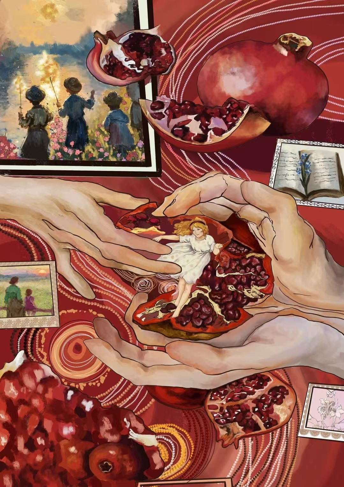
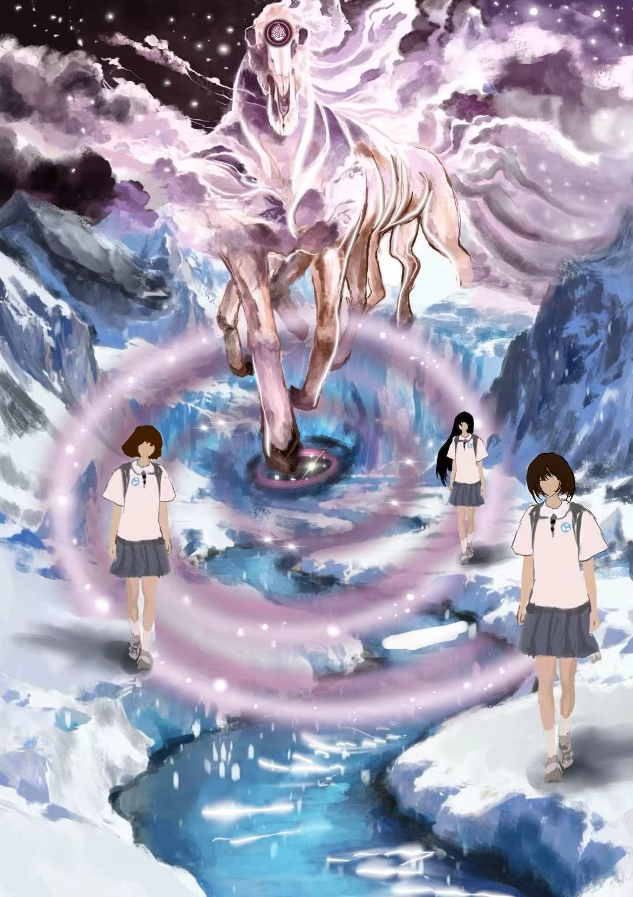
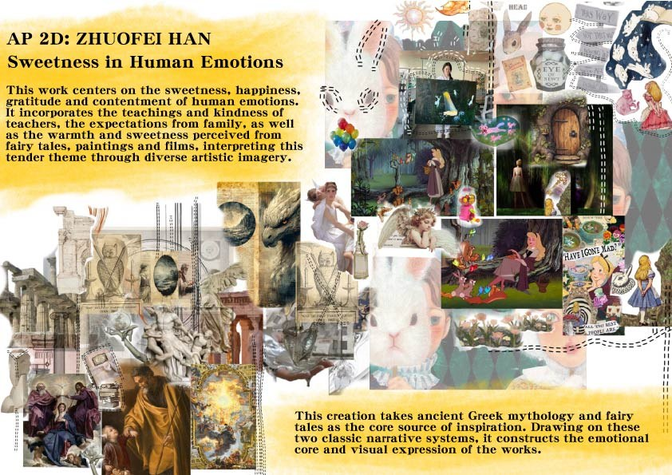
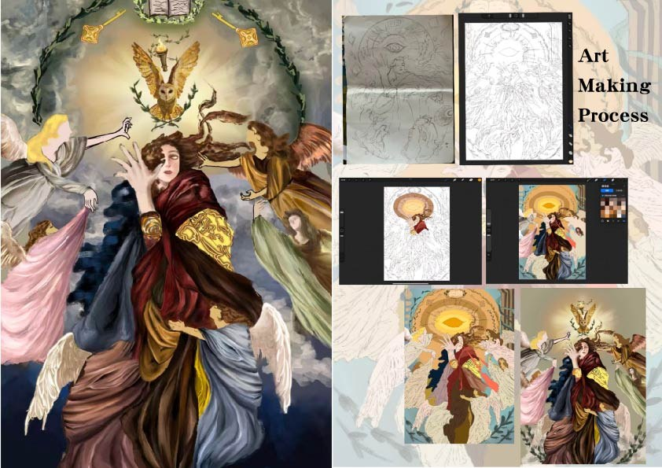
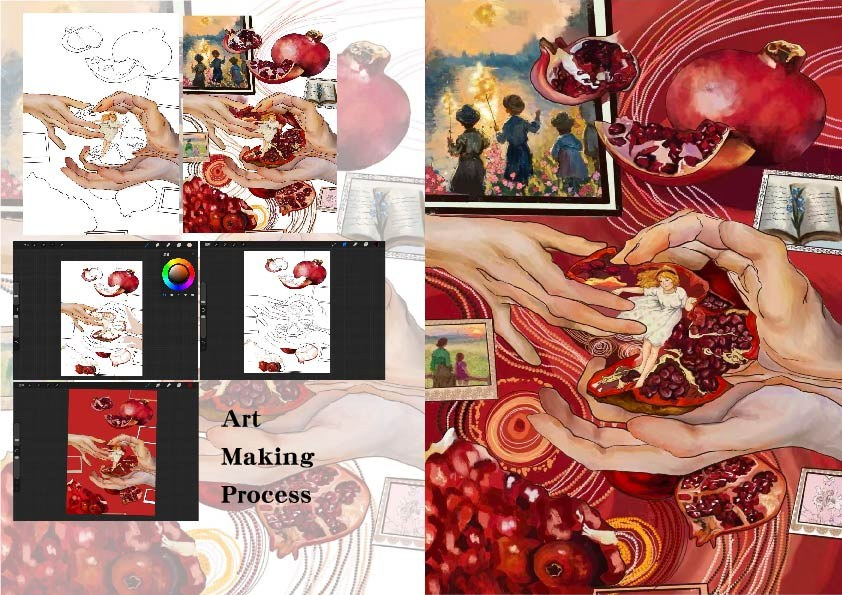
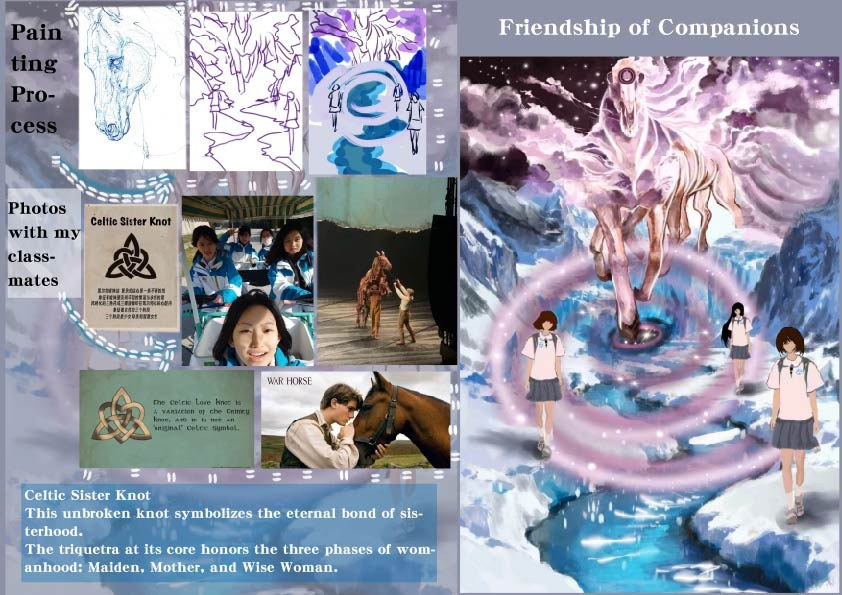
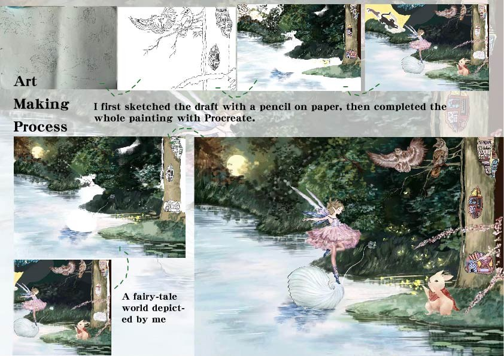

Pressure
What expectations feel like from the inside.
Artist · Visual Communicator
My work explores pressure, memory, family, friendship, imagination, and the quiet forms of connection that help young people move through uncertainty.



Featured communication project
A visual communication project about the emotions students often carry quietly: academic pressure, uncertainty, longing, family expectations, friendship, and the need to feel understood.
“Achievement is visible. The emotions behind it are often not.”
This project grows from my art portfolio, where I explored sweetness and warmth inside difficult emotional experiences. I am extending that artistic inquiry into a participatory project: listening to student voices, translating recurring themes into visual work, and creating space for reflection.
What expectations feel like from the inside.
What students keep private, even when others can see the outcome.
Family, teachers, friendship, animals, and imagination as sources of warmth.
Anonymous student voices become prompts for new visual communication pieces.

Where it began
The original portfolio asks how warmth can exist alongside pressure, loneliness, adolescence, and uncertainty. The campaign keeps that question, but adds an audience: students can contribute anonymous reflections that shape the next stage of the work.
Contribute a student voice →Selected work
These pieces are drawn from my art portfolio and reorganized here by the ideas they communicate, rather than by submission order.
Longing · Ambiguity
Cross-cultural love motifs visualize the ambiguity of teenage affection, guarded desire, and distant longing.
Digital painting · Procreate
Family · Memory
Pomegranates symbolize family unity; windows hold warm memories while hands suggest protection and care.
Digital painting · Procreate
Guidance · Respect
A tribute to teachers’ care and dedication, using symbolic imagery to express students’ respect.
Digital painting · Procreate
Friendship · Companionship
The horse acts as a symbol of an unbreakable bond as friends move through challenge together.
Digital painting · Procreate
Imagination · Refuge
A bond with animals opens into a magical world, using fantasy as a space for emotional release and wonder.
Digital painting · Procreate
Participatory campaign
Project contact: cloria081003@gmail.com
The next visual series will be inspired by recurring themes in anonymous student responses. Submissions should not include names, school IDs, contact information, or details that identify another person.
What is something you feel pressured about but rarely say?
When do you feel most misunderstood?
What helps you feel grounded again?
Behind the work




Impact tracker
Do not invent numbers. Replace these planning targets only with verified results after the campaign is launched.
About
I am a student artist interested in how visual language can communicate experiences that are difficult to explain directly. My work combines digital painting, watercolor, colored pencil, collage, and mixed media.
My current direction explores the emotional lives of students and the relationships, memories, and imagined spaces that can create warmth inside periods of pressure or uncertainty.
cloria081003@gmail.com